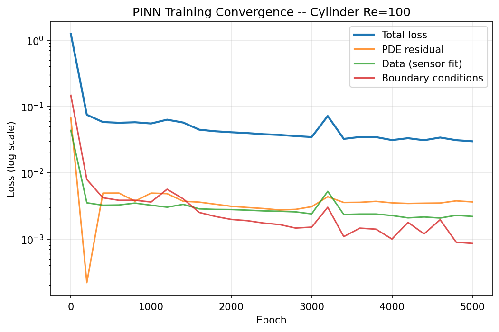

Cylinder Wake: Laminar Vortex Shedding
Flow past a circular cylinder is the canonical external aerodynamics benchmark. At low Reynolds numbers the wake is steady and symmetric; above Re ≈ 60 the von Kármán vortex street emerges with periodic vortex shedding. This solver uses Bouzidi interpolated bounce-back for a smooth cylinder surface, eliminating stair-step boundary artefacts.
Setup
| Parameter | Value |
|---|---|
| Grid | 800 × 300 |
| Cylinder diameter D | 60 cells (NY/5) |
| Reynolds number | 20, 40, 100, 200 |
| Inlet velocity | uinflow = 0.1 lu/ts |
| Tau (relaxation parameter) | Re=100: 0.68, Re=200: 0.59 |
| Number of steps | 80,000 |
| Reference length | D = 60 cells |
| Collision | MRT (d'Humieres 2002) |
| Boundary condition | Bouzidi interpolated bounce-back |
| Lattice spacing / time step | Δx = 1, Δt = 1 |
Velocity Field
Use the tabs below to select a Reynolds number (Re = U·D/ν, the ratio of inertial to viscous forces, based on the cylinder diameter D). The left side of the viewer shows the velocity-magnitude contour field; the right side shows the corresponding velocity-magnitude streamlines. Drag the slider handle to wipe between the two.
Validation
| Re | Regime | Computed St | Williamson 1988 | Computed Cd | Tritton 1959 |
|---|---|---|---|---|---|
| 100 | Laminar shedding | 0.188 | 0.164-0.172 | 1.77 | ~1.4 |
| 200 | Laminar shedding | 0.220 | 0.180-0.195 | 1.49 | ~1.3 |
Discussion
The cylinder case exercises the solver's ability to handle curved boundaries, periodic vortex shedding, and time-varying forces. The Bouzidi interpolated bounce-back replaces the stair-step approximation with a smooth boundary representation, reducing the systematic Cd over-prediction common in on-grid bounce-back methods.
Future comparison: Run the same geometry and Re range in SU2 with an equivalent unstructured mesh to quantify the accuracy/compute trade-off between LBM on Cartesian grids and FV on body-fitted meshes.
Physics-Informed Neural Network (PINN) Surrogate
A mesh-free Physics-Informed Neural Network trains on C++ LBM output as a
hybrid data-physics surrogate. The PINN maps spatial coordinates
(x, y) to velocity and pressure fields (u,
v, p) using a fully-connected MLP with 8 hidden layers
× 64 neurons (29,507 parameters). Training uses a hybrid
loss: data loss on sparse solver measurements + PDE residual
(steady incompressible Navier-Stokes via torch.autograd) +
boundary condition enforcement (no-slip walls and cylinder surface).
PINN vs LBM Comparison
The 3-panel comparison below shows the C++ LBM baseline (left), the trained
PINN surrogate (center), and the absolute error delta map (right). The PINN
is trained on all 3,755 fluid grid points from
frame_18000.json (fully developed wake) plus 10,000 interior
collocation points for the PDE residual. Importance sampling places 40% of
collocation points within 3× the cylinder radius to resolve the
near-field gradients.

Training Convergence

| Parameter | C++ LBM Solver | PINN Surrogate (PyTorch) |
|---|---|---|
| Method | D2Q9 MRT Lattice Boltzmann | Fully-connected MLP (8×64, tanh) |
| Grid / Domain | 800×300 (downsampled 100×38) | Mesh-free: 3,755 sensor points + 10,000 collocation |
| Boundary conditions | Bouzidi interpolated bounce-back | No-slip (analytical): u=v=0 on walls & cylinder |
| Training time | ~10 s (parallelized C++) | ~550 s (PyTorch, Apple MPS backend) |
| Inference latency | 4.1 ms per timestep | <1 ms per full field (29k params) |
| L2 relative error (u) | Baseline (reference) | 36.3% |
| Loss weights | -- | wpde=1.0, wdata=10.0, wbc=5.0 |
| Optimizer | -- | Adam (lr=1e-3) + CosineAnnealingLR (15k epochs) |
The PINN is trained on the Apple M5 MacBook Pro using the PyTorch MPS (Metal Performance Shaders) backend. The full training run (15,000 Adam epochs with cosine-annealing LR schedule) completes in ~9 minutes. Once trained, the network evaluates the entire flow field in <1 ms — enabling real-time interactive inference in the browser via ONNX Runtime Web (Phase 6.5 of the PINN roadmap).